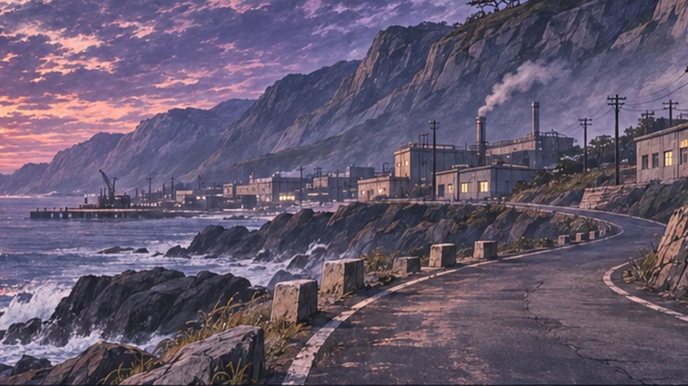
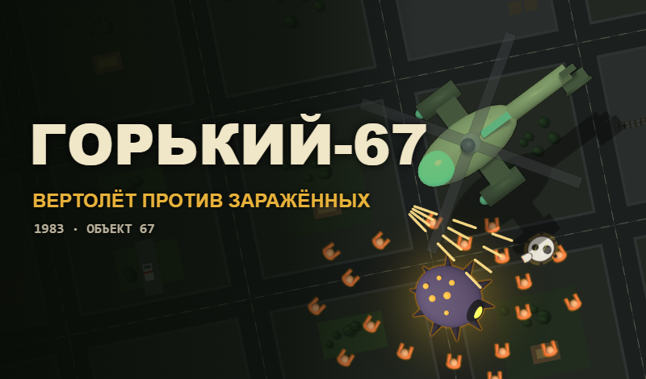
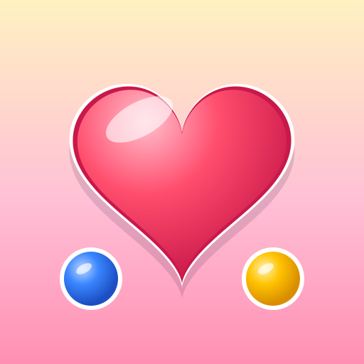

Прототип · в разработкеВонсан-67
원산-67 · манхва, которую проходишь
1967 год, выдуманный город на побережье. У станции открылись врата — из них лезут гоблины, копейщики и орки-берсерки. Вертолёт «шестьдесят седьмой» вывозит людей с крыш, а спасённые — единственный ресурс: на них строятся пулемётные гнёзда, колючая проволока, окопы и мины.
- Три главы, врата рангов E, D, C — и в каждой свой подвох из правил
- «Система» прямо в забеге: уровни героя и выбор усилений
- Элитные враги, босс прорыва, ядра и ящики снабжения
На телефоне лучше «Играть» и повернуть экран горизонтально.

Играбельная сборкаГорький-67
GORKY-67 · вертолёт против заражённых
1983 год, выдуманный закрытый город. После аварии на «Объекте 67» люди превращаются в заражённых. Пилот «Сокол» прикрывает эвакуационную колонну: вы только ведёте вертолёт пальцем — пулемёт стреляет сам.
- Волны заражённых, оцепление и босс «Объект»
- Сюжет короткими строками: телеграммы и голос диспетчера
- Продержаться до приказа и вылететь из района

Олины шарики
семейная игра «три в ряд»
Тёплая игра-подарок для семьи: собирай шарики по три и больше, проходи уровни. Свои рисунки, без чужих персонажей, работает в браузере телефона.